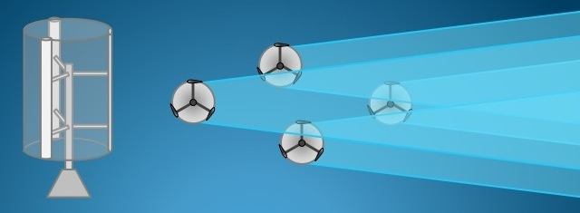
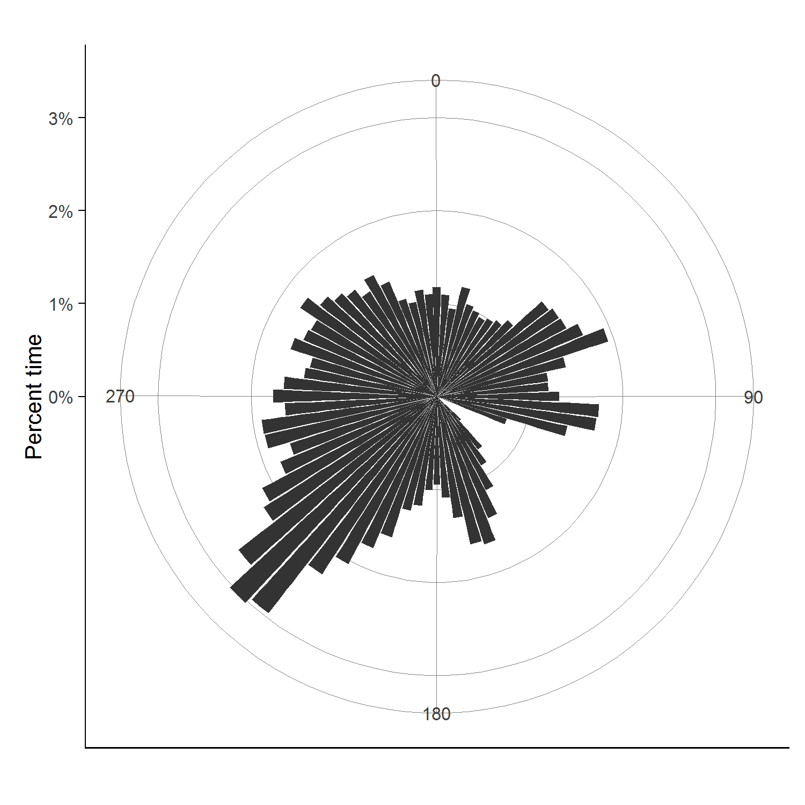

Research
Current Projects
VAWT Wake Model Development

Vertical axis wind turbines (VAWTs) are a promising technology for offshore applications because their lower center of gravity reduces foundation costs and their simplified mechanical components reduce maintenance costs. VAWT wind farms will face similar challenges, but VAWTs have very different wake behavior that must be understood to effectively design their layout. The evolution of wakes behind wind turbines is a complex turbulent process that can be visualized with high-fidelity instrumentation or high-fidelity simulation. However, for performing layout optimization, which must broadly explore many configurations, simpler engineering wake models are needed. This research effort is focused on developing VAWT engineering wake models to enable effective VAWT wind farm layout optimization.
Integrated Wind Farm Layout Optimization

Efficient layout design is a significant challenge, and today’s wind farms underperform energy capture expectations by around 10-20%. Recent research has demonstrated exciting potential for wind plant control systems to improve the cost of energy of wind plants. Wind plant controls seek to improve global wind plant performance over control systems in which each turbine optimizes only its individual performance by accounting for the way wind turbines interact through their wakes. We seek to combine efficient turbine optimization, layout optimization, and controls optimization in an integrated manner.
This research is currently funded by the National Renewable Energy Laboratory.
Wind Turbine Design Optimization
 Efficient extraction of wind energy is a complex, multidisciplinary process. We have developed a number of open-source integrated wind turbine analysis tools as part of the WISDEM toolset. Many of these tools provide exact gradients through automatic differentiation and/or adjoint methods. These capabilities have been used in studies to understand the impact of using different objectives in wind turbine optimization, analyze the impact of high-tip speed rotors, and compare optimized downwind and upwind turbines. Currently we are working in the area of free-form aero/structural rotor design.
Efficient extraction of wind energy is a complex, multidisciplinary process. We have developed a number of open-source integrated wind turbine analysis tools as part of the WISDEM toolset. Many of these tools provide exact gradients through automatic differentiation and/or adjoint methods. These capabilities have been used in studies to understand the impact of using different objectives in wind turbine optimization, analyze the impact of high-tip speed rotors, and compare optimized downwind and upwind turbines. Currently we are working in the area of free-form aero/structural rotor design.
Open-source tools we have developed include:
- CCBlade: a blade-element momentum method with guaranteed convergence behavior (beneficial for gradient-based optimization).
- pBEAM: a beam finite element method.
- AirfoilPreppy: a set of utilities for preprocessing airfoil aerodynamic data.
- pyFrame3DD: a wrapper to an existing finite element code with a few custom additions.
- RotorSE: a wind turbine rotor analysis module coupleing CCBlade, pBEAM, PreComp and other methods for rotor aero/structural analysis.
- TowerSE: a wind turbine tower analysis module using pBEAM, cylinder drag theory, linear wave theory, and methods from Eurocode and GL.
- TurbineSE: a wind turbine module integrating RotorSE, NacelleSE, and TowerSE
- LandBOS: a C/Python implementation of a balance-of-station cost model.
- CommonSE: a collection of common utilities shared amongst the WISDEM modules.
Past Projects
Formation Flight
 We explore a safer approach to formation flying of transport aircraft, which we term extended formation flight. Extended formations take advantage of the persistence of cruise wakes and extends the streamwise separation between the aircraft by at least five wingspans. At large distances, considerations such as wake rollup, atmospheric effects on circulation decay, and vortex motion become important to consider. We examine the wake rollup process in the context of extended formations and develop appropriate physics-based models. Our research address multiple aspects of formation flight: longitudinally extended formations, compressibility effects, formations of heterogeneous aircraft, and formation route optimization.
We explore a safer approach to formation flying of transport aircraft, which we term extended formation flight. Extended formations take advantage of the persistence of cruise wakes and extends the streamwise separation between the aircraft by at least five wingspans. At large distances, considerations such as wake rollup, atmospheric effects on circulation decay, and vortex motion become important to consider. We examine the wake rollup process in the context of extended formations and develop appropriate physics-based models. Our research address multiple aspects of formation flight: longitudinally extended formations, compressibility effects, formations of heterogeneous aircraft, and formation route optimization.
This research was partially funded by Airbus and included collaborations with the NASA Ames Advanced Supercomputing Division.